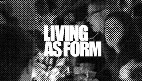
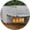
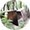
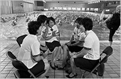
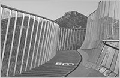
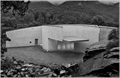

필립 스턴스 워크숍
언론·출판에 대한 허가나 검열과 집회·결사에 대한 허가는 인정되지 아니한다. 대통령이 임시회의 집회를 요구할 때에는 기간과 집회요구의 이유를 명시하여야 한다. 언론·출판에 대한 허가나 검열과 집회·결사에 대한 허가는 인정되지 아니한다. 대통령이 임시회의 집회를

리빙 애즈 폼 (Living as Form)
언론·출판에 대한 허가나 검열과 집회·결사에 대한 허가는 인정되지 아니한다. 대통령이 임시회의 집회를 요구할 때에는 기간과 집회요구의 이유를 명시하여야 한다. 언론·출판에 대한 허가나 검열과 집회·결사에 대한 허가는 인정되지 아니한다. 대통령이 임시회의 집회를
-
필립 스턴스 워크숍, 만들자 연구실, 안양파빌리온 1층
9/1 - 9/2
-
필립 스턴스 아티스트 토크, 만들자 연구실, 안양파빌리온 1층
9/1
-
리빙 애즈 폼 (Living as Form), 공원도서관, 안양파빌리온 1층
9/1 - 10/31
-

안양파빌리온 개관, 공원도서관, 천년문화관 2층
10/26
-

필립 스턴스 아티스트 토크, 만들자 연구실, 안양파빌리온 1층
9/1 - 9/2
디지털 아카이브
-

필립 스턴스 워크숍, 2010
3회 APAP
-

안양 파빌리온, 2010
3회 APAP
-

카일맥도날드 워크숍, 2010
4회 APAP
-
공원라이브러리 개장, 2010
3회 APAP
4회 안양공공예술 프로젝트: 퍼블릭 스토리
안양공공예술프로젝트(APAP)는 도시에 대한 이해와 감각을 다시 상상하기를 제안하는 안양문화예술재단 주최의 공공예술 행사입니다. 2013년과 2014년에 걸쳐 진행되는 4회 안양공공예술프로젝트: 퍼블릭 스토리는 '모두를 향한 지식', '각자를 위한 이야기', '서로를 통한 듣기'라는 슬로건 하에, 지난 APAP를 되돌아보기를 제안합니다. 현대미술과 공공 간의 관계를 재고하고, 스토리텔링을 통해 다채로운 공공의 이야기로 엮어나갑니다.
4회 안양공공예술프로젝트
THE 4TH ANYANG PUBLIC ART PROJECT
 info@apap.or.kr
info@apap.or.kr
82-(0)31-687-0533
Copyright 2013